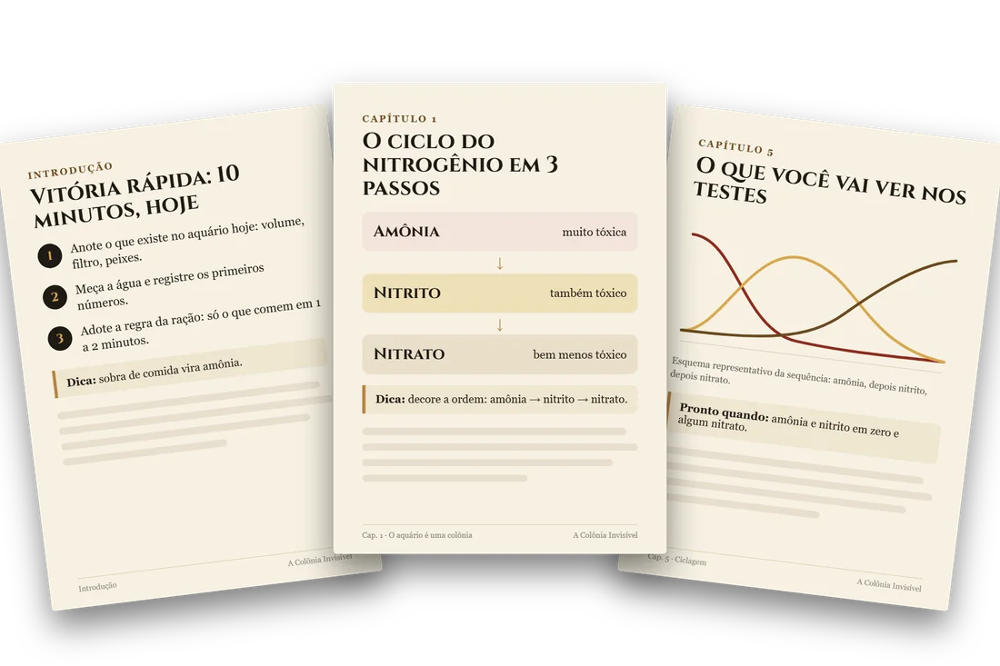

Entenda a colônia de bactérias que sustenta o aquário e comece com menos erros evitáveis, do primeiro dia ao primeiro mês.
Pagamento seguro pela Kiwify · Pix ou cartão · garantia de 7 dias
Em aquário novo, a colônia de bactérias que processa os resíduos ainda não existe. Sem ela, a amônia se acumula, mesmo com a água transparente. É o erro mais comum de quem começa, e é evitável.
A Colônia Invisível é um guia em PDF, em português, com linguagem direta e diagramas próprios, para quem está montando o primeiro aquário de água doce ou quer sair do básico.
Você aprende a tratar o aquário como uma colônia de bactérias que precisa ser criada e cuidada. Depois, a rotina vira uma checagem de cerca de 15 minutos por semana.
Garantia de 7 dias · reembolso pela Kiwify

Montagem em 10 passos, do vidro vazio ao começo da colônia.
Ciclagem sem peixes, antes do primeiro morador.
Leitura dos testes: o que cada número significa.
Rotina semanal enxuta, cerca de 15 minutos.
Como fazer sem peixes e ler os testes.
Capítulo-chaveDo vidro vazio ao começo da colônia.
Passo a passoO ciclo do nitrogênio, sem jargão.
O que você precisa de verdade.
Torneira, cloro e parâmetros que importam.
Introdução com calma e critério.
Um plano de 30 dias, sem adivinhar.
Rotina semanal enxuta.
Começar com poucas espécies fáceis.
Ler o sinal antes de tratar.
Próximos passos com segurança.
Um roteiro para agir com clareza.
Garantia de 7 dias · reembolso pela Kiwify
Prepare a colônia antes do primeiro morador entrar no aquário.
Saiba o que cada número significa e qual o próximo passo.
Uma sequência clara para o primeiro mês, sem adivinhar.
O ciclo do nitrogênio e a montagem explicados visualmente.
Manutenção semanal objetiva, sem produtos desnecessários.
PDF formatado para ler no celular, no tablet ou impresso.
O guia se apoia em referências listadas ao final do PDF, entre elas fontes oficiais e técnicas. Onde uma faixa é referência prática (como temperatura ou frequência de troca), ela vem marcada como tal.
Aquário envolve seres vivos e cada caso é único. Por isso o guia mostra o raciocínio, não promete resultado.
Pagamento seguro pela Kiwify · Pix ou cartão · garantia de 7 dias
No checkout você poderá adicionar o audiobook com planilha de ciclagem (oferta opcional).
Se o guia não for o que você esperava, peça o reembolso dentro de 7 dias após a compra, direto pela Kiwify (art. 49 do CDC).
Sim. O guia começa do zero e explica cada termo. O conteúdo intermediário fica nos capítulos finais.
Água doce: aquário de comunidade, plantado leve e introdução a camarões. Não cobre aquário marinho.
Em geral, algumas semanas, e o prazo varia de aquário para aquário. O guia explica como acompanhar com testes de água, e não só pela aparência.
O guia explica por que a colônia de bactérias precisa se formar antes e como fazer a ciclagem sem peixes.
Não. Nenhum material pode prometer isso. O guia mostra como reduzir as perdas causadas por erros evitáveis, como colocar peixes antes da colônia estar formada.
Por e-mail e na área de membros da Kiwify, logo após a confirmação do pagamento. Em PDF, para ler no celular, no computador ou imprimir.
Você tem 7 dias corridos após a compra para pedir o reembolso integral, sem burocracia, pela própria Kiwify.
Não. O foco é prevenção e manejo. Em caso de doença, o guia orienta a observar e buscar um profissional veterinário de animais aquáticos.
Garantia de 7 dias · reembolso pela Kiwify
Por menos do que o preço de um teste de água, você tem o passo a passo do primeiro mês.
Acesso imediato · garantia de 7 dias